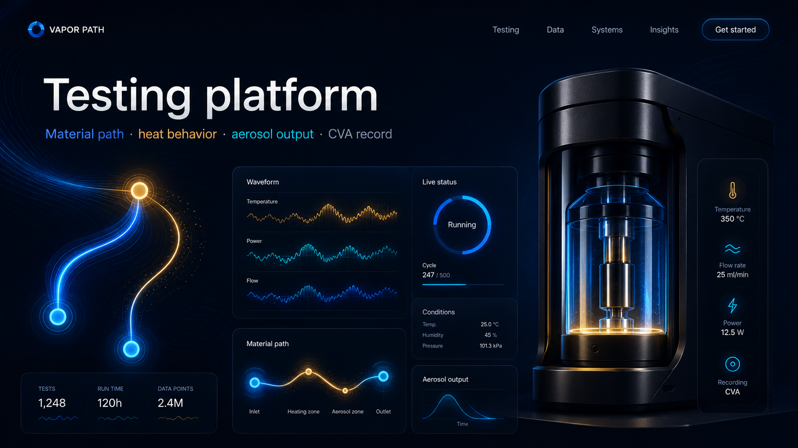

Commercial wedge
Start with the audit. Earn the pilot.
Proof Vapor Audit is the first paid offer: a non-plant-touching review that maps knowns, unknowns, proof gaps, and the pilot path.

What the audit does
The audit does not certify, approve, verify, or make safety claims. It identifies whether a serious operator should move to a one-SKU Proof Vapor Standard pilot.
Review
Material path + heater
Map system documentation, material disclosures, device/oil configuration, heating element, supplier claims, and unknowns.
Gap analysis
COA → CVA gap
Compare existing oil/test data to what would be needed for vapor-path proof under defined conditions.
Next step
Pilot recommendation
Recommend stop, remediate, benchmark, or move into a one-SKU pilot based on evidence and budget.
Commercial boundaryPaid audit execution still requires entity, payment path, SOW, data-rights terms, and counsel review. The audit does not guarantee a CVA or public claim.